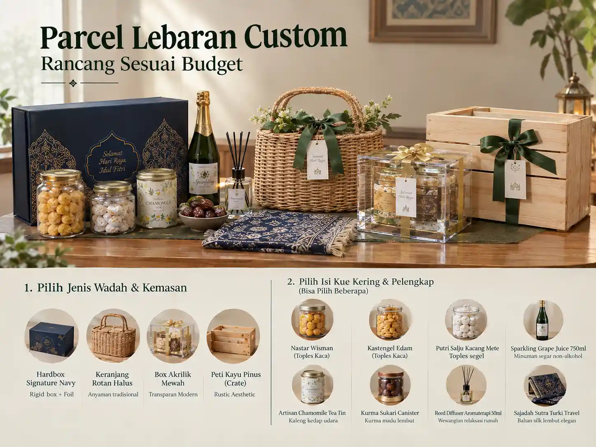

Pesan Parcel Lebaran idealnya dilakukan melalui alur Standar Operasional Prosedur (SOP) yang jelas: mulai dari merumuskan kebutuhan, memilih paket kurasi, menyepakati penawaran resmi, proses perakitan higienis, pemeriksaan mutu (quality control), hingga distribusi aman sampai ke pintu penerima. Memahami setiap fase ini menjamin pengalaman pengadaan yang bebas stres. Anda juga dapat membaca panduan lengkap kami seputar vendor parcel Lebaran untuk pribadi dan perusahaan.
Bagaimana Cara Pesan Parcel Lebaran yang Efisien?
Cara memesan parcel hari raya dimulai dengan menghubungi pihak penyedia melalui saluran resmi, memilih varian yang diinginkan, mengonfirmasi detail penerima, melakukan pembayaran uang muka, hingga menerima nomor resi pelacakan kurir.
Untuk pemesanan perseorangan, prosesnya sangat praktis: Anda tinggal memilih paket di katalog, melampirkan teks kartu ucapan, dan menentukan alamat antar. Namun untuk kebutuhan B2B atau kantor cabang, alurnya memerlukan pembuatan Quotation resmi, approval desain branding, dan manifes alamat terstruktur. Nikmati kepraktisan ini melalui layanan pemesanan parcel Lebaran yang dirancang khusus untuk memfasilitasi kebutuhan personal maupun institusi.
Apa yang Harus Disiapkan Sebelum Mengontak Vendor?
Agar konsultasi berjalan cepat dan solutif, siapkan poin-poin berikut sebelum menyapa tim sales:
- Total Volume Pesanan: Estimasi jumlah penerima (misal: 10 paket keluarga atau 100 paket karyawan).
- Rentang Anggaran (Budget Range): Target biaya per paket (misal: Rp 275.000 s/d Rp 850.000).
- Preferensi Isi: Apakah lebih condong ke kue kering klasik mentega wisman, minuman sparkling bersoda, atau perlengkapan ibadah.
- File Identitas Usaha: Logo perusahaan dalam format resolusi tinggi (PNG transparan atau file vektor PDF/AI) jika membutuhkan custom sleeve.
- Batas Akhir Penerimaan: Tanggal wajib paket sudah harus diterima di lokasi.
Alur Tahap Konsultasi & Penawaran Harga Resmi
Pada tahap konsultasi, kurator vendor akan mempelajari profil penerima Anda. Setelah itu, vendor akan menerbitkan dokumen penawaran harga (formal quotation) yang memuat nama paket, foto sampel, rincian gramatur isi toples, jenis wadah kotak, biaya cetak, dan ongkos kirim. Pelajari cara menilai penawaran harga ini di panduan kami mengenai faktor penentu harga parcel Lebaran.
Checklist yang Wajib Dikonfirmasi Sebelum Produksi Dimulai
Sebelum Anda mentransfer uang muka (down payment) dan pesanan dinaikkan ke meja kerja perakitan, pastikan seluruh item dalam checklist berikut telah disetujui kedua belah pihak:
- Rincian merek dan rasa toples kue yang disepakati (misal Nastar Wisman, Kastengel Keju Edam).
- Warna bahan hardbox dan pita satin (apakah Navy Gold, Emerald Green, atau Rustic).
- Penulisan nama pengirim dan penerima pada kartu ucapan Idulfitri.
- Klausul ganti rugi jika toples mengalami kerusakan saat dalam pengantaran kurir.

Tahapan Pembuatan Custom Logo & Approval Desain
Bagi pesanan yang memanfaatkan fasilitas custom sleeve, alur kerjanya dimulai dari:
- Penyerahan Aset Logo: Klien mengirimkan logo dan pedoman warna brand (color palette).
- Digital Mockup Preview: Tim desainer vendor menyajikan visualisasi 3D tampak depan dan sudut kotak hardbox.
- Proofing & Revisi: Klien memeriksa tata letak logo dan teks salam Lebaran.
- Final Approval: Penandatanganan bukti persetujuan desain sebelum dicetak massal di percetakan.
Ketahui panduan komparasi vendor berfasilitas custom di artikel cara memilih vendor parcel Lebaran.
Berapa Lama Durasi Waktu Produksi Parcel Lebaran?
Durasi produksi sangat tergantung pada kerumitan kemasan dan ketersediaan stok:
- Paket Katalog Reguler: Siap dikirim dalam waktu 1–2 hari kerja karena toples dan wadah ready stock.
- Paket Korporat Custom (10–50 box): Membutuhkan waktu perakitan 4–7 hari kerja termasuk proses cetak sleeve.
- Pesanan Skala Besar (100–500+ box): Membutuhkan 10–14 hari kerja untuk memastikan quality control per unit tetap konsisten.
Standar Quality Control (QC) Sebelum Masuk Ekspedisi
Di Parcel Lebaran, setiap bingkisan wajib melalui 4 lapis inspeksi ketat:
- Inspeksi Fisik Toples: Memastikan toples tidak retak dan segel plastik kedap udara (shrink wrap) merekat rapat.
- Uji Tata Letak (Anti-Shaking): Menggunakan busa pengganjal presisi agar toples tidak saling berbenturan saat mobil berakselerasi.
- Verifikasi Kelengkapan: Memastikan kartu ucapan, hangtag, dan pita terpasang rapi sesuai data pemesan.
- Pengemasan Luar (Outer Packaging): Membungkus hardbox dengan lapisan bubble wrap tebal dan kardus pengiriman khusus berselotip segel keamanan.
Cara Mengatur Pengiriman Multi-Alamat untuk Perusahaan
Badan Pusat Statistik (BPS) mencatat pada publikasi Statistik E-Commerce 2024 bahwa ekosistem usaha daring nasional bertumbuh 15,30 persen. Fenomena ini diimbangi peningkatan kapabilitas manajemen logistik terintegrasi.
Jika kantor Anda mendistribusikan parcel ke puluhan alamat rumah direksi atau mitra kerja, mintalah template spreadsheet data pengiriman dari vendor. Pastikan kolom nama penerima, alamat detail beserta patokan rumah, kota, kode pos, serta minimal 2 nomor telepon aktif telah terisi lengkap.
Kapan Waktu Terbaik Melakukan Pemesanan?
Bank Indonesia mencatat data lonjakan aktivitas transaksi digital selama periode Ramadhan dan Idulfitri 2025, di mana volume transaksi harian melompat signifikan hingga rata-rata 111 persen secara tahunan. Kenaikan aktivitas ini berimbas pada kepadatan antrean kurir logistik nasional menjelang lebaran.
Oleh sebab itu, waktu pemesanan paling ideal adalah pada minggu pertama dan kedua Ramadhan (H-25 sampai H-18 Lebaran). Pemesanan lebih awal memberikan ketenangan pikiran karena bingkisan telah tiba sebelum para karyawan dan mitra bisnis mudik ke kampung halaman.
| Wilayah / Skala Pesanan | Batas Waktu Order Resmi | Durasi Produksi & QC | Estimasi Waktu Tiba Aman |
|---|---|---|---|
| Pengiriman Luar Pulau Jawa | H-1 Bulan Sebelum Lebaran | 2–4 hari kerja (packing ekstra & outer box proteksi laut/udara) | H-14 s/d H-10 sebelum Idulfitri (aman sebelum overload kargo bandara/pelabuhan) |
| Pengiriman Pulau Jawa | H-14 Hari Sebelum Lebaran | 2–3 hari kerja (QC ketat & bubble wrap ganda) | H-7 s/d H-5 sebelum arus puncak mudik nasional |
| Pengiriman Wilayah Malang | H-7 Hari Sebelum Lebaran | 1–2 hari kerja (freshly assembled dari workshop lokal) | H-4 s/d H-2 via armada kurir internal langsung ke rumah penerima |
| Pesanan Korporat B2B (>50 Box) | H-45 s/d H-30 Hari | 7–14 hari kerja (approval sample, cetak sleeve logo, & perakitan massal) | H-10 sebelum cuti bersama hari raya dimulai |
Penanganan Kerusakan Barang & Garansi Penggantian
Vendor tepercaya selalu memberlakukan SOP garansi anti-rusak. Apabila terjadi kendala kurir yang mengakibatkan toples kue retak saat diterima, penerima cukup memotret kondisi kemasan dan mengirimkannya ke kontak customer care. Paket pengganti akan segera dikirimkan tanpa membebani biaya sepeser pun kepada pemesan.
Pertanyaan Seputar Proses Pemesanan
Hubungi admin WhatsApp kami, sampaikan paket pilihan dari katalog atau konsultasikan budget yang Anda miliki. Tim kami akan menyiapkan quotation resmi dan panduan pembayaran untuk memproses pesanan Anda.
Bisa. Kami melayani pencetakan sleeve luar box, hangtag kartu ucapan instansi, hingga laser grafir merchandise tumbler dengan minimal order yang sangat fleksibel (mulai 10–20 box).
Tentu bisa. Anda cukup mengisi spreadsheet alamat yang kami sediakan. Armada kurir kami menangani pengiriman langsung ke alamat masing-masing penerima di seluruh wilayah Malang Raya, Jawa Timur, dan kota-kota besar Indonesia lainnya.
Batas waktu pemesanan disesuaikan dengan wilayah pengiriman. Untuk luar Pulau Jawa, pemesanan dilakukan paling lambat H-1 bulan sebelum Lebaran. Untuk wilayah Pulau Jawa, paling lambat H-14 hari, sedangkan untuk wilayah Malang paling lambat H-7 hari sebelum Lebaran.
Cukup kirimkan dokumentasi foto atau video kondisi paket yang rusak melalui WhatsApp kami dalam kurun waktu 1x24 jam setelah serah terima. Kami akan segera mengirimkan unit toples pengganti baru secara cuma-cuma.
Kesimpulan
Proses pemesanan parcel Lebaran yang tertata rapi memberi jaminan bahwa niat baik silaturahmi Anda akan terwujud sempurna tanpa hambatan logistik. Dengan mengikuti alur konsultasi, approval sampel, dan pemesanan seawal mungkin, hari raya Anda akan disambut dengan penuh ketenangan dan rasa bangga.
Mulai Pemesanan Parcel Lebaran Anda Sekarang
Amankan jadwal produksi dan kuota pengiriman bingkisan hari raya Anda hari ini. Hubungi tim representatif kami untuk mendapatkan asistensi pemesanan yang cepat dan praktis.